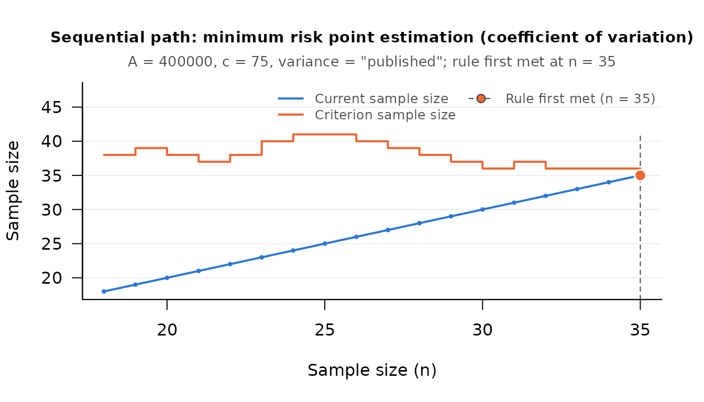
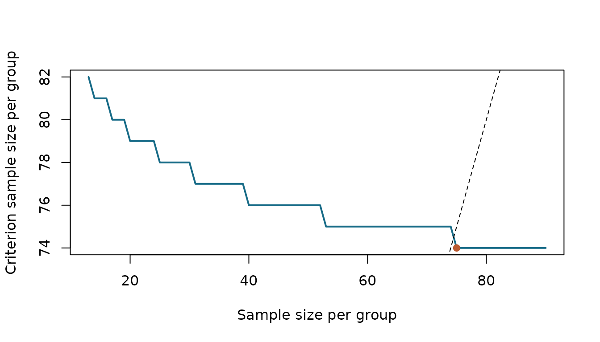
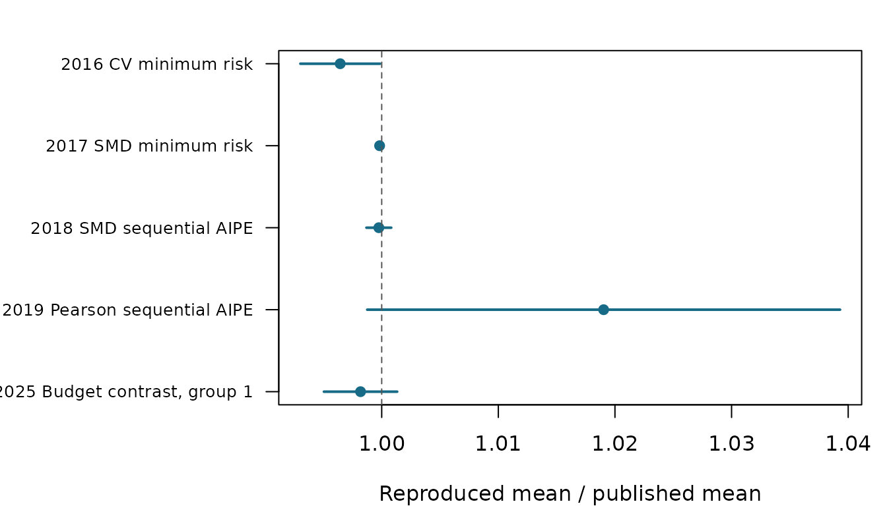

Replicating Published Sequential Examples
Source:vignettes/published-examples.Rmd
published-examples.RmdWhat Is Being Replicated?
The following examples illustrate sequential study design methods, with citations to the original articles alongside each example. The worked calculations run whenever the vignette is built. The Monte Carlo replications were run beforehand through the package’s exported functions, with independent seeds, and their actual results are installed with the package. A source table is a numerical comparison, not a guarantee of identical results from a new random sample.
The distinction matters where SMSD deliberately departs from a
printed formula. In particular, the 2016 example uses
variance = "published"; the default corrected estimator can
give different results. The 2025 replication uses
procedure = "first_passage", the reading of the article in
which a group closes permanently on first meeting its criterion. The
default "reallocate" procedure is a different sampling
policy. The help pages explain these choices and other departures.
2016: Minimum Risk Estimation of the Coefficient of Variation
Chattopadhyay and Kelley (2016, p. 638) give the following 35 observations, counts of books read, in collection order. The loss constant is 400,000, the cost per observation is 75, and the correction exponent is 0.49.
books <- c(36, 53, 19, 11, 10, 24, 14, 65, 18, 48, 25, 35, 13, 18, 3,
41, 5, 3, 44, 26, 13, 39, 2, 3, 26, 22, 8, 15, 12, 22, 5,
21, 23, 40, 18)
seq_mr_cv_pilot(A = 400000, c = 75)
#> [1] 18
published <- data.frame(n = c(18, 19, 35),
risk = c(5964.345, 6224.861, 4891.284),
cv = c(0.7391157, 0.7113385, 0.7013904))
reproduced <- do.call(rbind, lapply(published$n, function(n) {
out <- seq_mr_cv(books[seq_len(n)], A = 400000, c = 75,
variance = "published")
data.frame(n = n, risk = term(out, "risk"), cv = term(out, "cv"),
stop = attr(out, "is_satisfied"))
}))
knitr::kable(data.frame(n = published$n, paper_risk = published$risk,
SMSD_risk = reproduced$risk, paper_cv = published$cv,
SMSD_cv = reproduced$cv, stop = reproduced$stop), digits = 7)| n | paper_risk | SMSD_risk | paper_cv | SMSD_cv | stop |
|---|---|---|---|---|---|
| 18 | 5964.345 | 5964.345 | 0.7391157 | 0.7391157 | FALSE |
| 19 | 6224.861 | 6224.861 | 0.7113385 | 0.7113385 | FALSE |
| 35 | 4891.284 | 4891.284 | 0.7013904 | 0.7013904 | TRUE |
stopifnot(max(abs(published$risk - reproduced$risk)) < 0.0006,
max(abs(published$cv - reproduced$cv)) < 0.00000006)
book_path <- seq_path(seq_mr_cv, books, A = 400000, c = 75,
variance = "published")
stopifnot(attr(book_path, "stop_n") == 35)
plot(book_path, which = "criterion")
seq_report(book_path)
#> Sample size was determined with the sequential minimum risk point
#> estimation procedure for the coefficient of variation (Chattopadhyay &
#> Kelley, 2016), with a loss constant of A = 400,000 and a sampling cost
#> of c = 75 per observation. The stopping rule was evaluated from the
#> pilot sample size (n = 18) onward, after each additional observation,
#> and was first met at n = 35. At that sample size the estimate of the
#> coefficient of variation was 0.701. Note: The variance estimate is
#> Equation 22 of Chattopadhyay and Kelley (2016), as requested with
#> variance = "published". It agrees with the default estimator for normal
#> data and can differ otherwise; see ?seq_mr_cv.
#>
#> Reference
#> Chattopadhyay, B., & Kelley, K. (2016). Estimation of the coefficient
#> of variation with minimum risk: A sequential method for minimizing
#> sampling error and study cost. Multivariate Behavioral Research,
#> 51(5), 627–648. doi:10.1080/00273171.2016.1203279The first stopping point is exactly 35, as reported. The sampling
cost is 2625. To study the corrected procedure instead, change
variance to "corrected"; that is a comparison
of estimators, not a failed replication of the printed calculation.
2017: Standardized Mean Difference and Sampling Cost
The hypothetical pilot data printed in Chattopadhyay and Kelley (2017, p. 105) compare high and low exposure to same-language subtitling. The target probable error is 0.5 and its price is 2,500, so the loss constant is 10,000; sampling one child costs 2.40.
high <- c(11, 7, 22, 13, 6, 9, 11, 16, 12, 17, 14, 8, 16)
low <- c(3, 6, 10, 8, 14, 5, 12, 10, 6, 8, 13, 5, 9)
seq_mr_smd_pilot(A = 2500 / 0.5^2, c = 2.40)
#> [1] 13
pilot <- seq_mr_smd(high, low, A = 10000, c = 2.40)
pilot
#> Sequential check (minimum risk point estimation (standardized mean difference))
#>
#> Current n : 26
#> Criterion n : 164
#>
#> smd : 1.021484
#> risk : 1801.521
#> mean_1 : 12.46154
#> mean_2 : 8.384615
#> optimal_n1 : 82
#> optimal_n2 : 82
#> current_n1 : 13
#> current_n2 : 13
#> next_n1 : 14
#> next_n2 : 14
#>
#> Stopping rule met: FALSE
stopifnot(abs(term(pilot, "smd") - 1.021484) < 0.000001,
!attr(pilot, "is_satisfied"))
seq_mr_smd(c(high, 10), c(low, 8), A = 10000, c = 2.40)
#> Sequential check (minimum risk point estimation (standardized mean difference))
#>
#> Current n : 28
#> Criterion n : 164
#>
#> smd : 1.01687
#> risk : 1680.419
#> mean_1 : 12.28571
#> mean_2 : 8.357143
#> optimal_n1 : 82
#> optimal_n2 : 82
#> current_n1 : 14
#> current_n2 : 14
#> next_n1 : 15
#> next_n2 : 15
#>
#> Stopping rule met: FALSEThe pilot contains 13 observations per group, and its criterion is not met. The final call reproduces the paper’s next illustrated observation, 10 in the high group and 8 in the low group. The paper does not print a complete later sequence of individual scores, so it would be misleading to invent that sequence and call its stopping point an exact replication.
For the separate calculation on p. 106, condition on a sample SMD equal to 1 at every check. This is a sensitivity calculation with constructed data at each n, not a single growing data set:
sizes <- 13:90
criteria <- vapply(sizes, function(n) {
q <- stats::qnorm(stats::ppoints(n))
q <- (q - mean(q)) / stats::sd(q)
out <- seq_mr_smd(q + 1, q, A = 10000, c = 2.40)
term(out, "optimal_n1")
}, 0)
first <- sizes[which(sizes >= criteria)[1L]]
stopifnot(first == 75)
plot(sizes, criteria, type = "l", lwd = 2, col = "#176B87",
xlab = "Sample size per group", ylab = "Criterion sample size per group")
abline(a = 0, b = 1, lty = 2)
points(first, criteria[sizes == first], pch = 19, col = "#BA5A31")
2018: Sequential AIPE for General Effect Sizes
Kelley, Darku, and Chattopadhyay (2018) illustrate standardized mean differences, coefficients of variation, and regression coefficients among other quantities. Their pilot formula gives the following initial sizes for the table conditions used here:
data.frame(parameter = c("SMD", "Coefficient of variation", "Regression slope"),
width = c(0.2, 0.04, 0.2),
pilot = c(seq_aipe_smd_pilot(0.2), seq_aipe_cv_pilot(0.04),
seq_aipe_reg_coef_pilot(0.2)))
#> parameter width pilot
#> 1 SMD 0.20 20
#> 2 Coefficient of variation 0.04 98
#> 3 Regression slope 0.20 20The fresh simulation below repeats the normal-population SMD condition in their Table 2: population SMD 0.5, target width 0.2, and a 95% level. The paper reports a mean final size of 793.6 per group.
SMSD uses the authors’ corrected Equation 26, which is documented in
?seq_aipe_smd and accompanies the package. The replication
checks the resulting operating characteristic and reports Monte Carlo
uncertainty.
2019: Sequential AIPE for Correlations
The conscientiousness/neuroticism design example in Kelley, Darku, and Chattopadhyay (2019, p. 495) asks for a 95% Pearson interval of full width 0.10. Its pilot is exactly 40 pairs:
stopifnot(seq_aipe_r_pilot(width = 0.10) == 40)
seq_aipe_r_pilot(width = 0.10)
#> [1] 40The article describes collecting additional pairs; it does not supply
a complete observed sequence to reproduce. The simulation comparison
instead repeats its Table 2 condition with population correlation 0.5,
width 0.2, and a 95% level. The published mean final size is 204.0 and
coverage is 0.9012, already below the nominal level. The package’s
handling of an unusable variance differs deliberately from the printed
rule. vignette("coverage-and-design", package = "SMSD")
examines the practical coverage consequences in detail.
2025: A Contrast Under a Fixed Budget
For the equal-standard-deviation illustration in Chattopadhyay, Bandyopadhyay, Kelley, and Padalunkal (2025, p. 430), three groups cost 30 per observation and share a budget of 10,000. Weights of equal absolute size give equal optimal sample sizes:
optimal <- seq_budget_optimal(contrast_weights = c(1, 1, 1),
sigmas = c(1, 1, 1),
cost_per_group = c(30, 30, 30), budget = 10000)
optimal
#> $n_per_group
#> [1] 111.1111 111.1111 111.1111
#>
#> $minimum_variance
#> [1] 0.027
stopifnot(max(abs(optimal$n_per_group - 10000 / 90)) < 1e-10)The continuous optimum is 111.1111 per group. Rounding each size to 111 uses 9,990 of the budget, matching the paper’s illustration. This reconstructs its arithmetic under equal absolute weights, which the illustration does not specify. These three positive weights define a general linear combination. The following Table 1 calculation uses a contrast whose weights sum to zero, with unequal normal variances:
allocation <- seq_budget_optimal(contrast_weights = c(1, -2, 1),
sigmas = c(4.5, 0.9, 1),
cost_per_group = c(38, 15, 10), budget = 5000)
knitr::kable(data.frame(group = 1:3, paper = c(96.373, 61.3566, 41.7479),
SMSD = allocation$n_per_group), digits = 4)| group | paper | SMSD |
|---|---|---|
| 1 | 96.3730 | 96.3730 |
| 2 | 61.3566 | 61.3566 |
| 3 | 41.7479 | 41.7479 |
allocation$minimum_variance
#> [1] 0.2868806The final simulation comparison uses that table’s normal populations, means 1, 2, and 3, and a pilot of ten per group. It uses the first passage policy explicitly; the comparison is with the reported mean final size in the first group, not with the known-variance optimum.
Fresh Simulation Replications
Each condition was run in twenty independent batches of 25 studies, 500 studies in total. The standard error of a reproduced mean is the standard deviation of its twenty batch means divided by the square root of twenty. Each observation is added according to the package procedure; no study is stopped because it happens to agree with the paper.
comparison <- replications$summary
knitr::kable(comparison[, c("year", "procedure", "source", "studies")],
row.names = FALSE)| year | procedure | source | studies |
|---|---|---|---|
| 2016 | CV minimum risk | Table 1, p. 642 | 500 |
| 2017 | SMD minimum risk | Table 3, p. 104 | 500 |
| 2018 | SMD sequential AIPE | Table 2, p. 233 | 500 |
| 2019 | Pearson sequential AIPE | Table 2, p. 498 | 500 |
| 2025 | Budget contrast, group 1 | Table 1, p. 431 | 500 |
knitr::kable(comparison[, c("year", "published", "reproduced", "mcse",
"published_se", "difference")],
digits = 4, row.names = FALSE)| year | published | reproduced | mcse | published_se | difference |
|---|---|---|---|---|---|
| 2016 | 123.8528 | 123.412 | 0.2159 | 0.0870 | -0.4408 |
| 2017 | 50.0210 | 50.012 | 0.0042 | 0.0020 | -0.0090 |
| 2018 | 793.6000 | 793.404 | 0.4314 | NA | -0.1960 |
| 2019 | 204.0000 | 207.882 | 2.1101 | 0.7435 | 3.8820 |
| 2025 | 95.8680 | 95.694 | 0.1537 | 0.0954 | -0.1740 |
For the SMD procedures, n is per group. For the 2025 comparison it is the first group’s final size. For the other procedures it counts observations or pairs. The source table’s printed precision and its own Monte Carlo error also affect the comparison. A difference larger than the reproduction’s standard error alone is not sufficient evidence of an implementation defect; a difference can also arise from the documented corrections or sampling policy.
ratio <- comparison$reproduced / comparison$published
se <- comparison$mcse / comparison$published
par(mar = c(4, 11, 2, 1))
positions <- rev(seq_len(nrow(comparison)))
plot(ratio, positions, pch = 19, col = "#176B87", yaxt = "n", ylab = "",
xlim = range(c(1, ratio - 1.96 * se, ratio + 1.96 * se)),
xlab = "Reproduced mean / published mean")
axis(2, at = positions,
labels = paste(comparison$year, comparison$procedure), las = 1, cex.axis = 0.8)
segments(ratio - 1.96 * se, positions, ratio + 1.96 * se, positions,
col = "#176B87", lwd = 2)
abline(v = 1, lty = 2, col = "#555555")
The generating script, data-raw/paper_replications.R,
records every batch’s seed and output, the source hashes, package
version, and R version. Increase the studies per batch to obtain a more
precise replication; the build uses the completed results instead of
rerunning the simulations. The website’s validation article provides a
wider comparison with published tables.
References
Chattopadhyay, B., & Kelley, K. (2016). Estimation of the coefficient of variation with minimum risk: A sequential method for minimizing sampling error and study cost. Multivariate Behavioral Research, 51(5), 627-648. https://doi.org/10.1080/00273171.2016.1203279
Chattopadhyay, B., & Kelley, K. (2017). Estimating the standardized mean difference with minimum risk: Maximizing accuracy and minimizing cost with sequential estimation. Psychological Methods, 22(1), 94-113. https://doi.org/10.1037/met0000089
Kelley, K., Darku, F. B., & Chattopadhyay, B. (2018). Accuracy in parameter estimation for a general class of effect sizes: A sequential approach. Psychological Methods, 23(2), 226-243. https://doi.org/10.1037/met0000127
Kelley, K., Darku, F. B., & Chattopadhyay, B. (2019). Sequential accuracy in parameter estimation for population correlation coefficients. Psychological Methods, 24(4), 492-515. https://doi.org/10.1037/met0000203
Chattopadhyay, B., Bandyopadhyay, T., Kelley, K., & Padalunkal, J. J. (2025). A sequential approach for noninferiority or equivalence of a linear contrast under cost constraints. Psychological Methods, 30(2), 425-439. https://doi.org/10.1037/met0000570